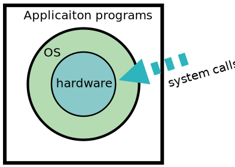

OS Introduction
Introduction to Operating System and its Functions
- Operating system is a system software which works as a interface between user and hardware.
- User cannot directly access hardware this is where Operating System helps user to access the hardware.
- Why there is need of operating system?
- If there is no operating system and user want to access a particular hardware, he have to write a program for it. Without OS interacting with hardware will become complex.
- Major goal of OS is to provide convenience to the user.
- Throughput: number of tasks executed per unit time.
- Linux operating system provides throughput

Major functionality of OS.
- Resource manager: When there are multiple user in a system then OS manages the resource like governing how much hardware to be provided to which user, so that system is not loaded.
- Process management: OS manages how to execute all the multiple process running at same time.
- Here we use various CPU scheduling.
- Storage management (HD): Basically includes secondary devices. It manages how to store permanent
data in memory.
- Storage management is done by "file mangement".
- Memory management (RAM): managing how much memory of RAM to allocate or deallocate to different
process as RAM is limited.
- it refers to management of primary memory.
- main memory is a large array of bytes where each byte has its own address.
- main memory provides a fast storage that can be accessed directly by the CPU. For a program to executed, it must be in the main memory.
- operating system keeps track of primary memory, ie what part of it are in use by whom, what part are not in use.
- in multiprogramming, the OS decides which process will get memory when and how much.
- allocates and the memory when a process requests it to do so.
- de-allocates the memory when a process no longer needs it or has been terminated.
- Process management: in this OS decides which process gets time. This function is called
process
scheduling. An operating system does the following activities for processor management:
- keeps tracks of processor and states of process. The program responsible for this task is known as traffic controller.
- allocates the processor (CPU) to a process.
- de-allocates processor when a process in no longer required.
- Device management: an operating system manages device communication via their respective
device
drivers.
- OS does the following things:
- keep tracks of all devices. The program responsible for this task is known as the I/O controller.
- allocates the device in the most efficient way.
- de-allocates devices.
- File management: a file system is normally organized into directories for easy navigation
and
usage. These directories may contain files and other directories.
- O/S does ↓
- keeps track of information, location, user, status, etc. The collective facilities often known as file system.
- decides who gets the resources.
- Security and privacy: practising authentication
- by means of password and similar other techniques, it prevents unauthorized access to programs and data.
- Control over system performance: records delary between request for a service and response from the system.
- Job accounting: keeps track of time and resources used by various jobs and users.
- Error detection aids: production of dumps, traces, error messages and other debugging and error detecting aids.
- Co-ordination between other software and users: coordionation and assignment of compilers, interpreters, assemblers and other software to the various users of the computer systems.
Goals of OS
- Convenience: user can operate computer without knowing assembly.
- easy to use.
- user friendly
- Efficient: able to perform task easily.
- Ability to evolve: ability to improve.
- permit development, testing, sercurity and updation.
Properties or characteristics of OS:
- Reliability: reliability is that a system does exactly what it is designed to do.
- at software level OS must be more reliable on detecting virus or malicious code as they take control of the system for their own purposes by exploiting design or implementation errors in the operating system's defenses.
- Availability: it is the percentage of time that the system is usable. Some system crashes
frequently, losing the user's work. Both reliability & availability are desirable.
- Availability is affected by two factors: the frequencry of failure called the mean time to failure (MTTF) and the time it takes to restore a system to a working state after failure (for example, to reboot), the MTTR (mean time to repair).
- Availability can be improved by increasing the MTTF or reducing the MTTR.
- Ease of management: OS must be easy to manage as there are lots of help & tutorials are available to rectify the erros.
- Security: as OS has administrative user that can make changes to the computer but for other user to make changes he has to enter the password of administration.
- Associated utilities: OS must have lots of associated utilities available like windows OS has lots of version and according to their version lots of free utilities are available like MS Office + MS SQL + Developing Languages.
- Cost: OS cost should be accordance of its features like windows has around $100 where DOS is free of charge as so is LINUX.
- Support for the users: OS should have a help section for users if any error or problem occurs, like Windows has a proper help section and websites, whereas Linux has books in pdf format available and DOS has websites and a forum for help as DOS is not very popular.
Dual mode of OS
- The dual mode operation in the OS ensures the proper execution of the operating system and shields it from illegal users.
- Dual mode operation is OS means that there are two modes of the OS: One is user, and the other one is kernel mode.
- While working in dual mode operation in OS, to discover the mode in which the current instruction is getting executed, the mode bit is required. In case the value of the mode bit is 1, it operates in user mode, and if it is 0, it operates in kernel mode.
User mode
- When the computer system runs the user applications such as file creation , they do not have direct access to the computer's hardware.
- In order to perform tasks hardware-related, such as when some interrupt occurs, the system must be switched to kernel mode.
- For the user, the mode bit is 1, which implies that the system will be in the User Mode in case the mode bit of the system's processor is 1.
Kernal mode
- In the Kernel Mode, all of the bottom-level tasks of the OS are performed.
- The kernel mode takes care of all the processes which need hardware support because the Kernel space has direct access to the system's hardware. Besides this, major Kernel Mode's functionality is the execution of priviledged instructions.
- These privileged instructions cannot be processed in the User mode as they are not provided user access. All the instructions and processes the user is restricted to obstruct are therefore executed in the Operating System's Kernel Mode.
- For the Kernel Mode, the mode bit is 0. Hence, the Mode bit of processor must be equal to 0 for the system to function in the Kernel Mode.
- Here are a few examples of privileged instructions: Input-Output management, Handling interrupts etc.

Switching between User Mode and Kernel Mode
- A process gets executed in user mode and kernel mode in its lifetime. In the user mode, the process has limited access. On the contrary, the kernel mode is the privileged mode in which the process has free access to system resources such as memory, hardware etc.
- Services such as hardware I/O can be executed by accessing kernel data in kernel mode. Anything linked with I/O hardware management, process management and memory management needs a process to get executed in Kernel mode.
- In Kernel mode, a process gets the power to access any device and memory, but any kind of crash in kernel mode brings down the entire system. However, if there is any crash in user mode, it brings down only the faulty process.
- The kernel offers SCI (System Call Interface), which acts as entry points for the user processes to enter into kernel mode. System calls are the only method by which a process can go from user mode to kernel mode.
Why is switching required?
Two primary reasons for switching between user mode and kernel mode are
- If every process were to run in a single mode only, it would end up with Microsoft's concern in the earlier versions of Windows. If any process were competent enough to exploit a vulnerability, then that process could control the system.
- Some conditions are identified as a trap, a system fault or an exception usually caused by an exceptional condition like invalid memory access, division by zero etc. Such a trap situation can crash the whole operating system if the process is in kernel mode. A process running in user mode that comes across a trap situation crashes the user-mode process only.
Therefore, switching overhead is essential for a more stable and secure system.
Difference between User Mode and Kernel Mode

Types of Operating System
- An operating system is a well-organized collection of programs that manages the computer hardware. It is a type of system software that is responsible for the smooth functioning of the computer system.
Single user operating system
- A single-user operating system is a type of operating system developed and intended for use on a computer or similar machine that will only have a single user at any given time.
- This type of OS is typically used on devices like wireless phones and two-way messaging devices.
- A single task operating system can only run one program or application at a time. So it is not as useful for a computer or other device intended to run multiple programs at once.
- This is where a multitasking single-user operating system is used instead. A multitasking OS can run multiple applications and programs at once.
- This is often used on computers where someone may want to navigate the internet, run a graphics editing program, play music through a media playing program, and type in notes in a simple word processing program all at the same time.
- a single task OS could not do this, but the multitasking systems can handle all these processes.
Types of single-user OS
1. Single-User Single-Tasking operating system
- In the Single-User Single-Tasking operating system, only one user is permitted for performing a single task at a time. Some functions such as printing a document and downloading images and videos are performed in one given frame. This operating system is designed especially for wireless phones as well as two-way messaging devices. For example, MS-DOS, Palm OS, etc.
- It has the following advantages:
- This OS occupies less space in memory.
- It is cost-effective.
2. Single-User Multi-Tasking operating system
- Single-User Multi-Tasking operating system is developed especially for one user, but this single user can perform multiple tasks simultaneously. For example, you can write any text while surfing the internet, downloading images, watching movies, etc., on Windows, Linux, Mac O/S.
- It has the following advantages:
- Time-saving
- High productivity in less time frame.
- Less memory is used for performing multiple tasks.
Features of single user OS
- It does not use scheduling process for I/O.
- It uses less scheduling for the users.
- It is only dedicated to single-use.
- It is not intented for several tasks at the same given time.
Functions of a single user OS
- Interpreting user commands: It takes the instructions from the user and passes them on to the rest of the operating system. This is the part of the OS that user interacts with to give instructions to the computer. It can be command-driven, menu-driven or a GUI.
- File management
- Memory management
- Input/Output management
- Resource allocation
- Managing processes
Examples of single user OS
- There are some operating system examples like DOS, Windows 3x, Windows 95, 97, 98. Also, in mobile phones, Symbian OS is single-user OS.
- These systems are also known are single application OS as one application is concentrated at a time. These systems require fewer resources and can do processing in a queue. The recurring tasks are performed well in these systems, such as making payroll or employees' salaries.
Advantages of single user OS
- Supports one user at a time: in these systems, one user is only active at a time. So there will be no other user interfering with the applications. And in these systems, all computer resources are used by user requests.
- Easy to maintain: these systems use fewer resources, and their complexity is less, making them easy to maintain and debug. Higher resources are needed in a multi-user operating system, and resources are used most of the time.
- Less chance to damage: these systems include fewer requests to hardware and software at a time, so they have less chance to damage. These systems do not make higher load time also.
- Concentrate on one task: in a modern OS, there are running multiple tasks at a time. Like many applications and tasks are running simultaneously, but in single-user OS, only one task runs at a time. So these systems give less output result at a time.
Disadvantages of single user OS
- Tasks take longer to complete: As you know, many tasks are waiting for the CPU if no multiple tasks run at a time. So these systems respond to processes at a higher time. This will make the system slow, and response time is higher.
- Idle time is higher: If only one task is running and this task doesn't require memory or I/O use, these devices remain idle. But other tasks need those devices. So only one task is run at a time, then other tasks have to wait till the first task is finished. So CPU, memory and disk I/O are not used properly.
Multi-User OS
- A multi-user operating system is an operating system that permits several users to access a single system running to a single operating system.
- hese systems are frequently quite complex, and they must manage the tasks that the various users connected to them require.
- Users will usually sit at terminals or computers connected to the system via a network and other system machines like printers
- A multi-user operating system varies from a connected single-user operating system in that each user accesses the same operating system from different machines.
- The main goal of developing a multi-user operating system is to use it for time-sharing and batch processing on mainframe systems. This multi-user operating system is now often used in large organizations, the government sector, educational institutions like large universities, and on servers' side such as Ubuntu Server or Windows Server. These servers allow several users to access the operating system, kernel, and hardware at the same time
- It is usually responsible for handling memory and processing for other running programs, identifying and using system hardware, and efficiently handling user interaction and data requests. It's especially important for an operating system, a multi-user operating system because several users rely on the system to function properly at the same time.
Components of Multi-User OS
- Memory: The physical memory present inside the system is where storage occurs. It is also known as Random Access Memory (RAM). The system may rectify the data that is present in the main memory. So, every executed program should be copied from physical storage like a hard disk. Main memory is determined as an important part of OS because it specifies how many programs may be executed simultaneously.
- Kernel: A multi-user operating system makes use of the Kernel component, which is built in a low-level language. This component is embedded in the computer system's main memory and may interact directly with the system's H/W.
- Processor: The CPU (Central Processing Unit) of the computer is sometimes known as the computer's brain. In large machines, the CPU would necessitate more ICS. On smaller computers, the CPU is mapped in a single chip known as a microprocessor.
- User Interface: The user interface is the way of interaction between users and all software and hardware processes. It enables the users to interact with the computer system in a simple manner.
- Device Handler: Each input and output device needs its device handler. The device handler's primary goal is to provide all requests from the whole device request queue pool. The device handler operates in continuous cycle mode, first discarding the I/O request block from the queue side.
- Spooler: Spooler stands for 'Simultaneous Peripheral Output on Line'. The Spooler runs all computer processes and outputs the results at the same time. Spooling is used by a variety of output devices, including printers.
Examples of Multi-User OS
- Unix: A highly dependable open system architecture for small and medium-scale business computing systems. Because it is based on Open System Architecture, tech giants including AIX, Solaris, and even Mac OS have their own version of Unix. For example, the Hospitality industry, Healthcare, etc.
- Multiple Virtual Storage: IBM develops an operating system for use on mainframe systems. It's commonly utilized in enterprise computing, where high-intensity I/O is required. For example, Banking, Insurance, Aviation business, etc.
- Shared computing: A multi-user OS is a software that operates the servers that support most webmail apps. A typical webmail application may require the utilization of hundreds of computers. Each one runs a multi- user operating system capable of supporting various users at the same time. Because these systems have millions, if not billions, of users who constantly log on to check their messages, they require operating systems that can handle a high number of users at once.
Advantages of Multi-User
- A multi-user operating system can be used in the printing process to allow multiple users to access the same printer, which a normal operating system may not do.
- On a single computer system, several users can access the same copy of a document. For instance, if a PPT file is kept on one computer, other users can see it on other systems.
- Multi-user operating systems are very useful in offices and libraries because they can efficiently handle printing jobs.
- If one computer fails in its own network system, the entire system does not come to a halt.
- Airlines use multi-user operating systems for some of their functions.
- The ticket reservation system uses a multi-user operating system.
- Each user can access the same document on their own computer.
Disadvantages of Multi-User
- Virus attacks occur simultaneously on all of them as the computers are shared. As a result, if one machine is affected, the others will be as well.
- If a virus hits one computer, it spreads to the entire network system simultaneously, and finally, all computer systems fail.
- All computer information is shared publicly, and your personal information is accessible to everyone on the network.
- Multiple accounts on a single computer may not be suitable for all users. Thus, it is better to have multiple PCs for each user.
Batch OS
- In the 1970s, Batch processing was very popular. In this technique, similar types of jobs were batched together and executed in time. People were used to having a single computer which was called a mainframe.
- In Batch operating system, access is given to more than one person; they submit their respective jobs to the system for the execution.
- The system put all of the jobs in a queue on the basis of first come first serve and then executes the jobs one by one. The users collect their respective output when all the jobs get executed.
- The user of this type of OS does not interact with the computer directly.
- Each user prepares his job on an offline device like puch cards and submits it to the computer operator.
- There is an operator which takes similar jobs having the same requirement and group them into batch.

- The purpose of this OS was mainly to transfer control from one job to another as soon as the job was completed.
- It contained a small set of programs called the resident monitor that always resided in one part of the main memory. The remaining part is used for servicing jobs.
Advantages of batch OS
- Processors of the batch systems know how long the job would run when it is in queue.
- Multiple users can share the batch systems.
- The use of a resident monitor improves computer efficieny as it eliminates CPU time between two jobs.
- It is easy to manage large work repeatedly in batch systems.
Disadvantages of batch OS
- Starvation: Batch processing suffers from starvvation.
- For example:

- There are five jobs J1, J2, J3, J4 and J5, present in the batch. If the execution time of J1 is very high, then the other four jobs will never be executed, or they will have to wait for a very long time. Hence the other processes get starved.
- The computer operators should be well known with batch systems.
- Batch systems are hard to debug.
- It is sometime costly.
- The other jobs will have to wait for an unknown time if any job fails.
- For example:
- Not interactive: Batch processing is not suitable for jobs that are dependent on the user's input. If a job requires the input of two numbers from the console, then it will never get it in the batch processing scenario since the user is not present at the time of execution.
Multiprogramming OS
- Multiprogramming is an extension to batch processing where the CPU is always kept busy. Each process needs two types of system time: CPU time and IO time.
- In a multiprogramming environment, when a process does its I/O, the CPU can start the execution of other process. Therefore, multiprogramming improves the efficiency of the system.

Advantages of Multiprogramming OS
- Throughout the system, it increased as the CPU always had one program to execute.
- Response time can also be reduced.
Disadvantages of Multiprogramming OS
- Multiprogramming systems provide an environment in which various systems resources are used efficiently, but they do not provide any user interaction with the computer system.
Distributed OS
- A distributed system is a model where distributed applications are running on multiple computers linked by a communications network.
- Sometimes it is also called loosely coupled systems because in which each processor has its own local memory and processing units.
- LOCUS and MICROS are some examples of distributed operating systems.
Parallel system
- These are designed to speed up the execution of programs by dividing the programs into multiple fragments and processing these fragments at the same time.
- Flynn
has classified computer systems into four types based on parallelism in the instructions
and in the data streams
- Single Instruction stream, single data stream
- Single Instruction stream, multiple data stream
- Multiple Instruction stream, single data stream
- Multiple Instruction stream, multiple data stream
Difference between Distributed and parallel system:

Real-Time OS
- A real-time operating system is a type of operating system designed to serve real-time applications that process data as it arrives
- It completes a task within a specific time.
- The logical result of computation and the time required to produce the result determine the correctness of the system output.
- It includes methods for real-time task scheduling
- It is primarily used on embedded systems.
- It is highly useful for timing applications or activities that are performed within a particular time limit. It uses strict time limits to drive task execution in an external environment.
Applications of RTOS
- Radar gadget.
- Missile guidance.
- Traffic manipulate gadget.
- Autopilot travel simulators.
Types of RTOS
- Hard Real-Time OS: All critical tasks must be completed within the specified time duration, i.e., within the given deadline. Not meeting the deadline would result in critical failures such as damage to equipment or even loss of human life.
- Soft Real-Time OS: It accepts a few delays via the means of the Operating system. In this kind of RTOS, there may be a closing date assigned for a particular job, but a delay for a small amount of time is acceptable. So, cut off dates are treated softly via means of this kind of RTOS.
Advantages of RTOS
- There's a quick response during task performance.
- It minimizes the idle time of the processor.
- All tasks get an equal chane of being accomplished.
- It reduces the chance of software duplication.
- A real-time operating system often takes less time to shift from one task to another. Tasks are typically switched in 3 microseconds or less. This type of expedited task management ensures that key processes are performed on time.
- An RTOS is a system that is available 24/7 because it produces maximum results. As a result, it is suited for applications that must run at all times.
- Real-time operating systems, particularly those based on hard RTOS, are completely error-free. It ensures a more effective way of handling the errors. Furthermore, operating systems experience with jitter, an issue in which the number of errors between loops is measured. A correctly programmed RTOS can be optimized so that it suffers fewer jitters
Disadvantages of RTOS
- The user's data security might be a problem.
- System failure can lead to widespread failures.
- Problems in data communication may arise.
- A Real-Time operating system constantly experiences signal interruptions. As a result, the needed drivers must be loaded on the computer in order to get consistent speed. With the help of drivers, an RTOS will be able to respond quickly whenever an interruption occurs.
- As mentioned earlier, an RTOS focuses on only one application at a time. It is used to maintain accuracy and reduce errors. All other low-priority applications need to be on waiting.
- Although a real-time operating system (RTOS) can focus on specific applications, it is not the same as multitasking. They are only designed to run some of the tasks.
- Program crashes may often be experienced while using a Real-Time operating system. Unlike a regular O/S, an RTOS may not efficiently separate memory domains. As a result, processes would have a problem addressing them.
- Complex algorithms are behind an RTOS interface. These algorithms will be difficult to write for a typical user. Only a professional developer will be able to write and understand them.
Structure of OS
- An operating system is a construct that allows the user application programs to interact with the system hardware.
- Since the operating system is such a complex structure, it should be created with utmost care so it can be used and modified easily.
- An easy way to do this is to create the operating system in parts. Each of these parts should be well defined with clear inputs, outputs and functions.
Simple Structure
- There are many operating systems that have a rather simple structure.
- These started as small systems and rapidly expanded much further than their scope.
- A common example of this is MS-DOS. It was designed for a niche amount for people. there was no indication that it would become so popular.
OS structure
- It is better that operating systems have a modular structure, unlike MS-DOS. That would lead to greater control over the computer system and its various applications. The modular structure would also allow the programmers to hide information as required and implement internal routines as they see fit without changing the outer specifications.

Layered Structure
- One way to achieve modularity in the OS is the layered approach.
- In this, the bottom layer is the hardware and the topmost layer is the user interface.
- An image demonstrating the layered approach is as follows ↓

Operating System Services
- The user program requests various resources through the operating system.
- The OS gives several services to utility programmers and users. Applications access these services through application programming interfaces or system calls.
- By invoking those interfaces, the application can request a service from the OS, pass parameters, and acquire the operation outcomes.
Following are the services provided by an OS
- Program execution
- Control Input/Output devices
- Program creation
- Error detection and response
- Accouning
- Security and protection
- File management
- Communication
Program execution
- To execute a program, several tasks need to be performed. Both the instructions and data must be loaded into the main memory.
- In addition, input-output devices and files should be initialized, and other resources must be prepared.
- The Operating structures handle these kinds of tasks. The user now no longer should fear the reminiscence allocation or multitasking or anything.
Control Input/Output devices
- As there are numerous types of I/O devices within the computer system, and each I/O device calls for its own precise set of instructions for the operation.
- The Operating System hides that info with the aid of presenting a uniform interface. Thus, it is convenient for programmers to access such devices easily.
Program Creation
- The Operating system offers the structures and tools, including editors and debuggers, to help the programmer create, modify, and debugging programs.
Error detection and response
- An Error in a device may also cause malfunctioning of the entire device.
- These include hardware and software errors such as device failure, memory error, division by zero, attempts to access forbidden memory locations, etc.
- To avoid error, the operating system monitors the system for detecting errors and takes suitable action with at least impact on running applications.
While working with computers, errors may occur quite often. Erros may occur in the:
- Input/Output devices: For example, connection failure in the network, lack of paper in the printer, etc.
- User program: For example - attempt to access illegal memory location, divide by zero, use too much CPU time, etc.
- Memory hardware: For exmple, memory error, the memory becomes full, etc.
To handle these errors and other types of possible errors, the operating system takes appropriate action and generates message to ensure correct and consistent computing.
Accounting
- An Operating device collects utilization records for numerous assets and tracks the overall performance parameters and responsive time to enhance overall performance.
- These personal records are beneficial for additional upgrades and tuning the device to enhance overall performance.
Security and protection
- Operating device affords safety to the statistics and packages of a person and protects any interference from unauthorized users.
- The safety feature counters threats, which are published via way of individuals out of doors the manage of the running device.
For example:
- When a user downloads something from the internet, that program may contain malicious code that may harm the already existing programs. The operating system ensures that proper checks are applied while downloading such programs.
- f one computer system is shared amongst a couple of users, then the various processes must be protected from another intrusion. For this, the operating system provides various mechanisms that allow only those processes to use resources that have gained proper authorization from the operating system. The mechanism may include providing unique users ids and passwords to each user.
File management
- Computers keep data and information on secondary storage devices like magnetic tape, magnetic disk, optical disk, etc. Each storage media has its capabilities like speed, capacity, data transfer rate, and data access methods.
- For file management, the operating system must know the types of different files and the characteristics of different storage devices. It has to offer the proportion and safety mechanism of documents additionally.
Communication
- The OS manages the exchange of data and programs among different computers connected over a network. This communication using message passing and shared memory.
System Calls
Methodologies for implementation of O/S service System Calls:
- Basically the system call is an instruction that request the OS to perform the desired operation that needs hardware access or other priviliged operations.
- For performing any operation a user must have to request for a service call which is known as the
system call. Or we can say:
- Programming interface to the services provided by the OS.
- They are typically written in a high-level language (C or C++).
- There are two modes in the operation of system which is user mode or system mode.
- In user mode all user processes are executed.
- In system mode all privileged operations are executed.
- The user programs and kernel functions are being executed in their respective space alloted in the main memory partitions.
- User mode programs need to execute some privileged operations, which are not permitted in user mode functions, user mode programs must use an interface, which forms the only permitted interface between user mode functions and kernel mode.
- This interface is called system calls.
- So system call is an interface between the user programs and the OS.
- System calls expose all kernel functionalities that user mode programs require.
- Basically the system call is an instruction that request the OS to perform the desired oepration that needs hardware access or other privileged operations.
Systemm call generates an interrupt that causes the OS to gain control of the CPU. The OS then finds out the type of system call and the corresponding interrupt handler routine is executed to perform the operation.
- System calls are inherently used for security reasons. Due to the use of system calls, a user program is not able to enter into OS or any other's user's region. Similarly, I/O devices are also safe.

- From any misuse by the user. Thus, through the use of system calls, kernel, other user programs, and I/O devices are safe and secure from malicious user programs.
Making a system call
- Now system calls are directly available and used in high level languages like C & C++. So it has become easy to use system calls in programs.
- For a programmers, system calls are same as calling a procedure or functino.
- The difference between a system call and a normal function call is that a system call enter a kernel but a normal function call doesn't.
Executing the system call
- There is a sequence of steps to execute a system call.
- For this, there is the need to pass various parameters of system call to the OS.
- For passing these parameters to the OS, three methods are used as follow :
- Register method, where in the parameters are stored in registers of the CPU.
- If parameters are not in number, compared to the size of registers, a block of memory is used and the address of that block is stored in register.
- Stack method, where in parameters are pushed onto stack and popped of by the OS.
Sequence in which system call is executed
- In the user program when the system call is executed, first of all, its parameters are pushed onto the stack and later on saved in processor registers.
- The corresponding library procedure for the system call is executed.
- There is a particular code for every system call by which the kernel identifies which system call function or handler needs to be executed. Therefore library procedure places the system call number in the processor register.
- Then the library procedure traps to the kernel by executing interrupt instruction, with this interrupt execution, the user mode switches to kernel mode by loading program status word (PSW) register to 0.
- The hardware saves the current contents of CPU registers, so that after executing the system call, the execution of the rest of the program can be resumed.
- The kernel identifies the system call by examining its number and dispatches the control to the corresponding system call handler.
- The system call handler executes.
- On completion of system call handler, the control is returned to the user program and it resumes its execution.

Why do you need system calls in OS?
- It is must require when a file system wants to create or delte a file.
- Network connections require the system calls to sending and receiving data packets.
- If you want to read or write a file, you need system calls.
- If you want to access hardware devices, including a printer, scanner, you need a system call.
- System calls are used to create and manage new processes.
Types of system calls

Examples of Windows and Unix system calls

Some methods in briefly:
Open()
- The open() system call allows you to access a file on a file system. It allocates resources to the file and provides a handle that the process may refer to. Many processes can open a file at once or by a single process only. It's all based on the file system and structure.
read()
- It is used to obtain data from a file on the file system. It accepts three arguments in
general:
- A file descriptor.
- A buffer to store read data.
- The number of bytes to read from the file.
- The file descriptor of the file to be read could be used to identify it an open it using open() before reading.
wait()
- In some systems, a process may have to wait for another process to complete its execution before proceeding
- When a parent process makes a child process, the parent process execution is suspended until the child process is finished.
- The wait() system call is used to suspend the parent process. Once the child process has completed its execution, control is returned to the parent process.
write()
- It is used to write data from a user buffer to a device like a file. This system call is
one way for a
program to generate data. It takes three arguments in general:
- A file descriptor.
- A pointer to the buffer in which data is saved.
- The number of bytes to be written from the buffer.
fork()
- Processes generate clones of themselves using the fork() system call.
- It is one of the most common ways to create processes in operating systems.
- When a parent process spawns a child process, execution of the parent process is interrupted until the child process completes.
- Once the child process has completed its execution, control is returned to the parent process.
close()
- It is used to end file system access.
- When this system call is invoked, it signifies that the program no longer requires the file, and the buffers are flushed, the file information is altered, and the file resources are de-allocated as a result.
exec()
- When an executable file replaces an earlier executable file in an already executing process, this system function is invoked.
- As a new process is not built, the old process identification stays, but the new process replaces data, stack, data, head, etc.
exit()
- The exit() is a system call that is used to end program execution.
- This call indicates that the thread execution is complete, which is especially useful in multi-threaded environments. The operating system reclaims resources spent by the process following the use of the exit() system function.